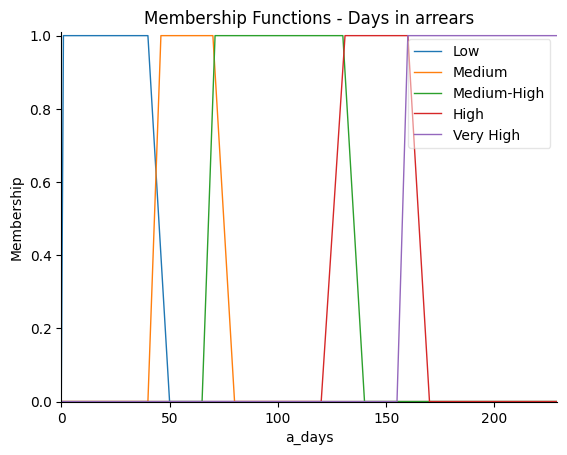
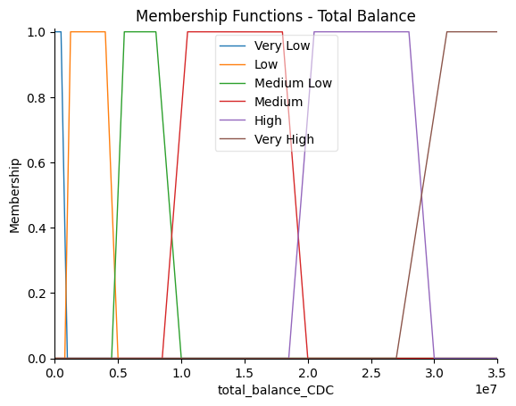
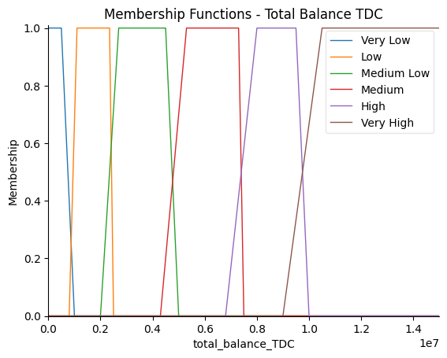
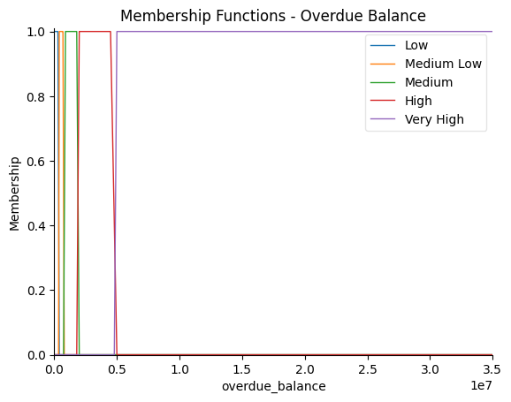
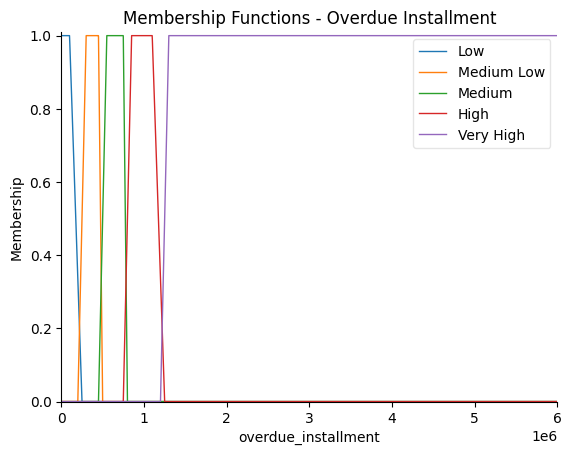
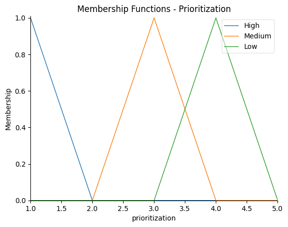
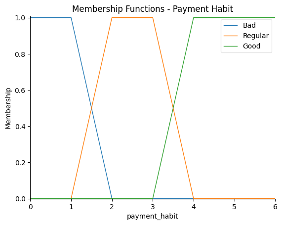
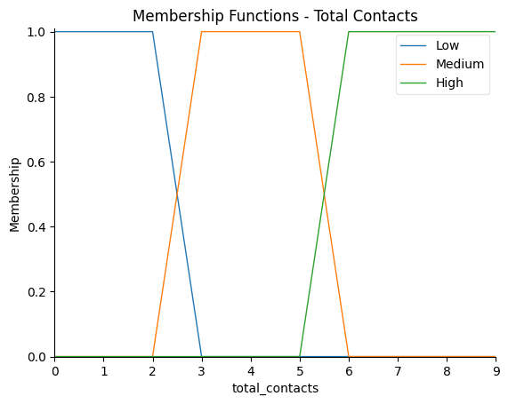
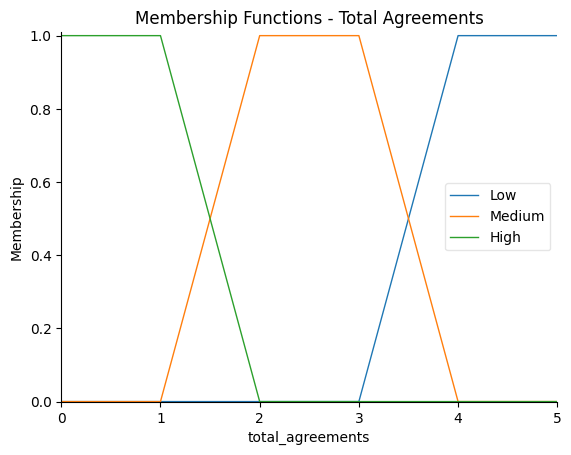
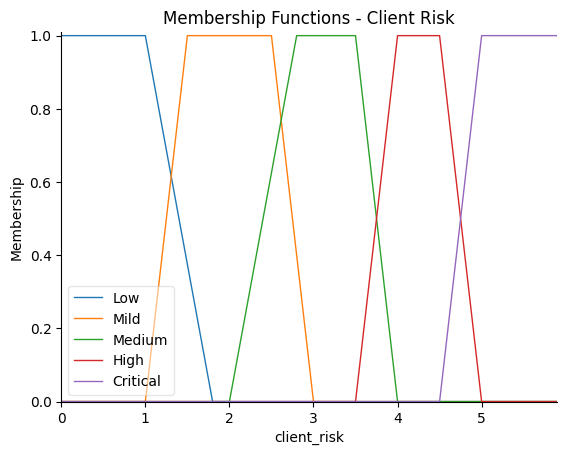

Profiles and Levels#
Profiles#
# |
Profile |
|---|---|
1 |
Low-Risk Client |
2 |
Mild-Risk Client |
3 |
Medium-Risk Client |
4 |
High-Risk Client |
5 |
Critical-Risk Client |
Levels and Linguistic Descriptors#
Show code cell source
from IPython.display import display, HTML
import pandas as pd
import numpy as np
import matplotlib.pyplot as plt
import plotly.express as px
import plotly.graph_objects as go
import skfuzzy as fuzz
from skfuzzy import control as ctrl
from sklearn import metrics
import pandas as pd
import plotly.express as px
import seaborn as sns
import numpy as np
import pandas as pd
from sklearn.metrics import confusion_matrix, classification_report
import plotly.graph_objects as go
html_code = """
<table border="1" cellspacing="0" cellpadding="5">
<tr>
<th>Variable</th>
<th>Linguistic Descriptor</th>
<th>Value Ranges</th>
</tr>
<tr>
<td rowspan="3">Risk Default</td>
<td>High</td>
<td>0.01 - 0.55</td>
</tr>
<tr>
<td>Medium</td>
<td>0.4 - 0.80</td>
</tr>
<tr>
<td>Low</td>
<td>0.7 - 1</td>
</tr>
<tr>
<td rowspan="5">Days in arrears</td>
<td>Very High</td>
<td>155 - 230</td>
</tr>
<tr>
<td>High</td>
<td>120 - 170</td>
</tr>
<tr>
<td>Medium-High</td>
<td>65 - 140</td>
</tr>
<tr>
<td>Medium</td>
<td>40 - 80</td>
</tr>
<tr>
<td>Low</td>
<td>0 - 50</td>
</tr>
<tr>
<td rowspan="6">Total Balance CDC</td>
<td>Very High</td>
<td>27MM - 35MM</td>
</tr>
<tr>
<td>High</td>
<td>18.5MM - 30MM</td>
</tr>
<tr>
<td>Medium</td>
<td>8.5MM - 20MM</td>
</tr>
<tr>
<td>Medium Low</td>
<td>4.5MM - 10MM</td>
</tr>
<tr>
<td>Low</td>
<td>800K - 5MM</td>
</tr>
<tr>
<td>Very Low</td>
<td>0 - 1MM</td>
</tr>
<tr>
<td rowspan="6">Total Balance TDC</td>
<td>Very High</td>
<td>9MM - 15MM</td>
</tr>
<tr>
<td>High</td>
<td>6.8MM - 10MM</td>
</tr>
<tr>
<td>Medium</td>
<td>4.3MM - 7.5MM</td>
</tr>
<tr>
<td>Medium Low</td>
<td>2MM - 5MM</td>
</tr>
<tr>
<td>Low</td>
<td>800K - 2.5MM</td>
</tr>
<tr>
<td>Very Low</td>
<td>0 - 1MM</td>
</tr>
<tr>
<td rowspan="5">Overdue Balance</td>
<td>Very High</td>
<td>4.8MM - 35MM</td>
</tr>
<tr>
<td>High</td>
<td>1.8MM - 5MM</td>
</tr>
<tr>
<td>Medium</td>
<td>750K - 2MM</td>
</tr>
<tr>
<td>Medium Low</td>
<td>350K - 800K</td>
</tr>
<tr>
<td>Low</td>
<td>0 - 400K</td>
</tr>
<tr>
<td rowspan="5">Overdue Installment</td>
<td>Very High</td>
<td>1.2MM - 6MM</td>
</tr>
<tr>
<td>High</td>
<td>750K - 1.25MM</td>
</tr>
<tr>
<td>Medium</td>
<td>450K - 800K</td>
</tr>
<tr>
<td>Medium Low</td>
<td>200K - 500K</td>
</tr>
<tr>
<td>Low</td>
<td>0 - 250K</td>
</tr>
<tr>
<td rowspan="3">Priorization</td>
<td>Low</td>
<td>3 - 5</td>
</tr>
<tr>
<td>Medium</td>
<td>2 - 4</td>
</tr>
<tr>
<td>High</td>
<td>1 - 2</td>
</tr>
<tr>
<td rowspan="3">Payments Habit</td>
<td>Good</td>
<td>3 - 6</td>
</tr>
<tr>
<td>Regular</td>
<td>1 - 4</td>
</tr>
<tr>
<td>Bad</td>
<td>0 - 2</td>
</tr>
<tr>
<td rowspan="3">Total Contacts</td>
<td>High</td>
<td>5 - 10</td>
</tr>
<tr>
<td>Medium</td>
<td>2 - 6</td>
</tr>
<tr>
<td>Low</td>
<td>0 - 3</td>
</tr>
<tr>
<td rowspan="3">Total Agreements</td>
<td>High</td>
<td>0 - 2</td>
</tr>
<tr>
<td>Medium</td>
<td>2 - 4</td>
</tr>
<tr>
<td>Low</td>
<td>3 - 6</td>
</tr>
</table>
"""
display(HTML(html_code))
| Variable | Linguistic Descriptor | Value Ranges |
|---|---|---|
| Risk Default | High | 0.01 - 0.55 |
| Medium | 0.4 - 0.80 | |
| Low | 0.7 - 1 | |
| Days in arrears | Very High | 155 - 230 |
| High | 120 - 170 | |
| Medium-High | 65 - 140 | |
| Medium | 40 - 80 | |
| Low | 0 - 50 | |
| Total Balance CDC | Very High | 27MM - 35MM |
| High | 18.5MM - 30MM | |
| Medium | 8.5MM - 20MM | |
| Medium Low | 4.5MM - 10MM | |
| Low | 800K - 5MM | |
| Very Low | 0 - 1MM | |
| Total Balance TDC | Very High | 9MM - 15MM |
| High | 6.8MM - 10MM | |
| Medium | 4.3MM - 7.5MM | |
| Medium Low | 2MM - 5MM | |
| Low | 800K - 2.5MM | |
| Very Low | 0 - 1MM | |
| Overdue Balance | Very High | 4.8MM - 35MM |
| High | 1.8MM - 5MM | |
| Medium | 750K - 2MM | |
| Medium Low | 350K - 800K | |
| Low | 0 - 400K | |
| Overdue Installment | Very High | 1.2MM - 6MM |
| High | 750K - 1.25MM | |
| Medium | 450K - 800K | |
| Medium Low | 200K - 500K | |
| Low | 0 - 250K | |
| Priorization | Low | 3 - 5 |
| Medium | 2 - 4 | |
| High | 1 - 2 | |
| Payments Habit | Good | 3 - 6 |
| Regular | 1 - 4 | |
| Bad | 0 - 2 | |
| Total Contacts | High | 5 - 10 |
| Medium | 2 - 6 | |
| Low | 0 - 3 | |
| Total Agreements | High | 0 - 2 |
| Medium | 2 - 4 | |
| Low | 3 - 6 |
Membership Functions#
Risk Default#
Show code cell source
risk = ctrl.Antecedent(np.arange(0.01, 1, 0.001), 'risk')
risk["High"] = fuzz.trapmf(risk.universe, (0.01, 0.01, 0.45, 0.55))
risk["Medium"] = fuzz.trapmf(risk.universe, (0.4, 0.45, 0.75, 0.80))
risk["Low"] = fuzz.trapmf(risk.universe, (0.7, 0.80, 1, 1))
risk.view()
plt.title("Membership Functions - Risk Default")
plt.show()
/home/ssilvera/Escritorio/Proyectos/ProyectoDeGrado/.env/lib/python3.12/site-packages/skfuzzy/control/fuzzyvariable.py:125: UserWarning: FigureCanvasAgg is non-interactive, and thus cannot be shown
fig.show()
\[\begin{split}
\mu_{\text{High}}(x) =
\begin{cases}
0, & x < 0.01 \\
1, & 0.01 \leq x \leq 0.45 \\
\frac{0.55 - x}{0.10}, & 0.45 \leq x \leq 0.55 \\
0, & x > 0.55
\end{cases}\\
\end{split}\]
\[\begin{split}
\mu_{\text{Medium}}(x) =
\begin{cases}
0, & x < 0.4 \\
\frac{x - 0.4}{0.05}, & 0.4 \leq x \leq 0.45 \\
1, & 0.45 \leq x \leq 0.75 \\
\frac{0.80 - x}{0.05}, & 0.75 \leq x \leq 0.80 \\
0, & x > 0.80
\end{cases}\\
\end{split}\]
\[\begin{split}
\mu_{\text{Low}}(x) =
\begin{cases}
0, & x < 0.7 \\
\frac{x - 0.7}{0.10}, & 0.7 \leq x \leq 0.80 \\
1, & 0.80 \leq x \leq 1 \\
0, & x > 1
\end{cases}
\end{split}\]
Days in arrears#
Show code cell source
a_days = ctrl.Antecedent(np.arange(0, 230, 1), 'a_days')
a_days["Low"] = fuzz.trapmf(a_days.universe, [0, 1, 40, 50])
a_days["Medium"] = fuzz.trapmf(a_days.universe, [40, 46, 70, 80])
a_days["Medium-High"] = fuzz.trapmf(a_days.universe, [65, 71, 130, 140])
a_days["High"] = fuzz.trapmf(a_days.universe, [120, 131, 160, 170])
a_days["Very High"] = fuzz.trapmf(a_days.universe, [155, 160, 230, 230])
a_days.view()
plt.title("Membership Functions - Days in arrears")
plt.show()

\[\begin{split}
\mu_{\text{Low}}(x) =
\begin{cases}
0, & x < 1 \\
1, & 1 \leq x \leq 40 \\
\frac{50 - x}{10}, & 40 \leq x \leq 50 \\
0, & x > 50
\end{cases}
\end{split}\]
\[\begin{split}
\mu_{\text{Medium}}(x) =
\begin{cases}
0, & x < 40 \\
\frac{x - 40}{6}, & 40 \leq x \leq 46 \\
1, & 46 \leq x \leq 70 \\
\frac{80 - x}{10}, & 70 \leq x \leq 80 \\
0, & x > 80
\end{cases}
\end{split}\]
\[\begin{split}
\mu_{\text{Medium-High}}(x) =
\begin{cases}
0, & x < 65 \\
\frac{x - 65}{6}, & 65 \leq x \leq 71 \\
1, & 71 \leq x \leq 130 \\
\frac{140 - x}{10}, & 130 \leq x \leq 140 \\
0, & x > 140
\end{cases}
\end{split}\]
\[\begin{split}
\mu_{\text{High}}(x) =
\begin{cases}
0, & x < 120 \\
\frac{x - 120}{11}, & 120 \leq x \leq 131 \\
1, & 131 \leq x \leq 160 \\
\frac{170 - x}{10}, & 160 \leq x \leq 170 \\
0, & x > 170
\end{cases}
\end{split}\]
\[\begin{split}
\mu_{\text{Very High}}(x) =
\begin{cases}
0, & x < 155 \\
\frac{x - 155}{10}, & 155 \leq x \leq 160 \\
1, & 160 \leq x \leq 230 \\
0, & x > 230
\end{cases}
\end{split}\]
Total Balance#
Show code cell source
#total_balance_CDC = ctrl.Antecedent(np.linspace(0, 350_000_000, 5000), "total_balance_CDC")
total_balance_CDC = ctrl.Antecedent(np.linspace(0, 35_000_000, 5000), "total_balance_CDC")
total_balance_CDC["Very Low"] = fuzz.trapmf(total_balance_CDC.universe, [0, 0, 500_000, 1_000_000])
total_balance_CDC["Low"] = fuzz.trapmf(total_balance_CDC.universe, [800_000, 1_250_000, 4_000_000, 5_000_000])
total_balance_CDC["Medium Low"] = fuzz.trapmf(total_balance_CDC.universe, [4_500_000, 5_500_000, 8_000_000, 10_000_000])
total_balance_CDC["Medium"] = fuzz.trapmf(total_balance_CDC.universe, [8_500_000, 10_500_000, 18_000_000, 20_000_000])
total_balance_CDC["High"] = fuzz.trapmf(total_balance_CDC.universe, [18_500_000, 20_500_000, 28_000_000, 30_000_000])
#total_balance_CDC["Very High"] = fuzz.trapmf(total_balance_CDC.universe, [27_000_000, 31_000_000, 350_000_000, 350_000_000]) # original range
total_balance_CDC["Very High"] = fuzz.trapmf(total_balance_CDC.universe, [27_000_000, 31_000_000, 35_000_000, 35_000_000]) # For visualization
total_balance_CDC.view()
plt.title("Membership Functions - Total Balance")
plt.show()

\[\begin{split}
\mu_{\text{Very Low}}(x) =
\begin{cases}
1, & x \leq 500,000 \\
\frac{1,000,000 - x}{500,000}, & 500,000 \leq x \leq 1,000,000 \\
0, & x > 1,000,000
\end{cases}
\end{split}\]
\[\begin{split}
\mu_{\text{Low}}(x) =
\begin{cases}
0, & x < 800,000 \\
\frac{x - 800,000}{450,000}, & 800,000 \leq x \leq 1,250,000 \\
1, & 1,250,000 \leq x \leq 4,000,000 \\
\frac{5,000,000 - x}{1,000,000}, & 4,000,000 \leq x \leq 5,000,000 \\
0, & x > 5,000,000
\end{cases}
\end{split}\]
\[\begin{split}
\mu_{\text{Medium Low}}(x) =
\begin{cases}
0, & x < 4,500,000 \\
\frac{x - 4,500,000}{1,000,000}, & 4,500,000 \leq x \leq 5,500,000 \\
1, & 5,500,000 \leq x \leq 8,000,000 \\
\frac{10,000,000 - x}{2,000,000}, & 8,000,000 \leq x \leq 10,000,000 \\
0, & x > 10,000,000
\end{cases}
\end{split}\]
\[\begin{split}
\mu_{\text{Medium}}(x) =
\begin{cases}
0, & x < 8,500,000 \\
\frac{x - 8,500,000}{2,000,000}, & 8,500,000 \leq x \leq 10,500,000 \\
1, & 10,500,000 \leq x \leq 18,000,000 \\
\frac{20,000,000 - x}{2,000,000}, & 18,000,000 \leq x \leq 20,000,000 \\
0, & x > 20,000,000
\end{cases}
\end{split}\]
\[\begin{split}
\mu_{\text{High}}(x) =
\begin{cases}
0, & x < 18,500,000 \\
\frac{x - 18,500,000}{2,000,000}, & 18,500,000 \leq x \leq 20,500,000 \\
1, & 20,500,000 \leq x \leq 28,000,000 \\
\frac{30,000,000 - x}{2,000,000}, & 28,000,000 \leq x \leq 30,000,000 \\
0, & x > 30,000,000
\end{cases}
\end{split}\]
\[\begin{split}
\mu_{\text{Very High}}(x) =
\begin{cases}
0, & x < 27,000,000 \\
\frac{x - 27,000,000}{4,000,000}, & 27,000,000 \leq x \leq 31,000,000 \\
1, & 31,000,000 \leq x \leq 350,000,000 \\
0, & x > 350,000,000
\end{cases}
\end{split}\]
Show code cell source
#total_balance_TDC = ctrl.Antecedent(np.linspace(0, 200_000_000, 5000), "total_balance_TDC")
total_balance_TDC = ctrl.Antecedent(np.linspace(0, 15_000_000, 5000), "total_balance_TDC")
total_balance_TDC["Very Low"] = fuzz.trapmf(total_balance_TDC.universe, [0, 0, 500_000, 1_000_000])
total_balance_TDC["Low"] = fuzz.trapmf(total_balance_TDC.universe, [800_000, 1_100_000, 2_350_000, 2_500_000])
total_balance_TDC["Medium Low"] = fuzz.trapmf(total_balance_TDC.universe, [2_000_000, 2_700_000, 4_500_000, 5_000_000])
total_balance_TDC["Medium"] = fuzz.trapmf(total_balance_TDC.universe, [4_300_000, 5_300_000, 7_300_000, 7_500_000])
total_balance_TDC["High"] = fuzz.trapmf(total_balance_TDC.universe, [6_800_000, 8_000_000, 9_500_000, 10_000_000])
total_balance_TDC["Very High"] = fuzz.trapmf(total_balance_TDC.universe, [9_000_000, 10_500_000, 15_000_000, 15_000_000]) # for visualization
#total_balance_TDC["Very High"] = fuzz.trapmf(total_balance_TDC.universe, [9_000_000, 10_500_000, 200_000_000, 200_000_000]) # original range
total_balance_TDC.view()
plt.title("Membership Functions - Total Balance TDC")
plt.show()

\[\begin{split}
\mu_{\text{Very Low}}(x) =
\begin{cases}
1, & x \leq 500,000 \\
\frac{1,000,000 - x}{500,000}, & 500,000 \leq x \leq 1,000,000 \\
0, & x > 1,000,000
\end{cases}
\end{split}\]
\[\begin{split}
\mu_{\text{Low}}(x) =
\begin{cases}
0, & x < 800,000 \\
\frac{x - 800,000}{300,000}, & 800,000 \leq x \leq 1,100,000 \\
1, & 1,100,000 \leq x \leq 2,350,000 \\
\frac{2,500,000 - x}{150,000}, & 2,350,000 \leq x \leq 2,500,000 \\
0, & x > 2,500,000
\end{cases}
\end{split}\]
\[\begin{split}
\mu_{\text{Medium Low}}(x) =
\begin{cases}
0, & x < 2,000,000 \\
\frac{x - 2,000,000}{700,000}, & 2,000,000 \leq x \leq 2,700,000 \\
1, & 2,700,000 \leq x \leq 4,500,000 \\
\frac{5,000,000 - x}{500,000}, & 4,500,000 \leq x \leq 5,000,000 \\
0, & x > 5,000,000
\end{cases}
\end{split}\]
\[\begin{split}
\mu_{\text{Medium}}(x) =
\begin{cases}
0, & x < 4,300,000 \\
\frac{x - 4,300,000}{1,000,000}, & 4,300,000 \leq x \leq 5,300,000 \\
1, & 5,300,000 \leq x \leq 7,300,000 \\
\frac{7,500,000 - x}{200,000}, & 7,300,000 \leq x \leq 7,500,000 \\
0, & x > 7,500,000
\end{cases}
\end{split}\]
\[\begin{split}
\mu_{\text{High}}(x) =
\begin{cases}
0, & x < 6,800,000 \\
\frac{x - 6,800,000}{1,200,000}, & 6,800,000 \leq x \leq 8,000,000 \\
1, & 8,000,000 \leq x \leq 9,500,000 \\
\frac{10,000,000 - x}{500,000}, & 9,500,000 \leq x \leq 10,000,000 \\
0, & x > 10,000,000
\end{cases}
\end{split}\]
\[\begin{split}
\mu_{\text{Very High}}(x) =
\begin{cases}
0, & x < 9,000,000 \\
\frac{x - 9,000,000}{1,500,000}, & 9,000,000 \leq x \leq 10,500,000 \\
1, & 10,500,000 \leq x \leq 200,000,000 \\
0, & x > 200,000,000
\end{cases}
\end{split}\]
Overdue Balance#
Show code cell source
overdue_balance = ctrl.Antecedent(np.linspace(0, 35_000_000, 5000), "overdue_balance")
overdue_balance["Low"] = fuzz.trapmf(overdue_balance.universe, [0, 0, 300_000, 400_000])
overdue_balance["Medium Low"] = fuzz.trapmf(overdue_balance.universe, [350_000, 400_000, 700_000, 800_000])
overdue_balance["Medium"] = fuzz.trapmf(overdue_balance.universe, [750_000, 900_000, 1_800_000, 2_000_000])
overdue_balance["High"] = fuzz.trapmf(overdue_balance.universe, [1_800_000, 2_000_000, 4_500_000, 5_000_000])
overdue_balance["Very High"] = fuzz.trapmf(overdue_balance.universe, [4_800_000, 5_000_000, 35_000_000, 35_000_000])
overdue_balance.view()
plt.title("Membership Functions - Overdue Balance")
plt.show()

\[\begin{split}
\mu_{\text{Low}}(x) =
\begin{cases}
1, & x \leq 300,000 \\
\frac{400,000 - x}{100,000}, & 300,000 \leq x \leq 400,000 \\
0, & x > 400,000
\end{cases}
\end{split}\]
\[\begin{split}
\mu_{\text{Medium Low}}(x) =
\begin{cases}
0, & x < 350,000 \\
\frac{x - 350,000}{50,000}, & 350,000 \leq x \leq 400,000 \\
1, & 400,000 \leq x \leq 700,000 \\
\frac{800,000 - x}{100,000}, & 700,000 \leq x \leq 800,000 \\
0, & x > 800,000
\end{cases}
\end{split}\]
\[\begin{split}
\mu_{\text{Medium}}(x) =
\begin{cases}
0, & x < 750,000 \\
\frac{x - 750,000}{150,000}, & 750,000 \leq x \leq 900,000 \\
1, & 900,000 \leq x \leq 1,800,000 \\
\frac{2,000,000 - x}{200,000}, & 1,800,000 \leq x \leq 2,000,000 \\
0, & x > 2,000,000
\end{cases}
\end{split}\]
\[\begin{split}
\mu_{\text{High}}(x) =
\begin{cases}
0, & x < 1,800,000 \\
\frac{x - 1,800,000}{200,000}, & 1,800,000 \leq x \leq 2,000,000 \\
1, & 2,000,000 \leq x \leq 4,500,000 \\
\frac{5,000,000 - x}{500,000}, & 4,500,000 \leq x \leq 5,000,000 \\
0, & x > 5,000,000
\end{cases}
\end{split}\]
\[\begin{split}
\mu_{\text{Very High}}(x) =
\begin{cases}
0, & x < 4,800,000 \\
\frac{x - 4,800,000}{200,000}, & 4,800,000 \leq x \leq 5,000,000 \\
1, & 5,000,000 \leq x \leq 35,000,000 \\
0, & x > 35,000,000
\end{cases}
\end{split}\]
Overdue Installment#
Show code cell source
overdue_installment = ctrl.Antecedent(np.linspace(0, 6_000_000, 5000), "overdue_installment")
overdue_installment["Low"] = fuzz.trapmf(overdue_installment.universe, [0, 0, 100_000, 250_000])
overdue_installment["Medium Low"] = fuzz.trapmf(overdue_installment.universe, [200_000, 300_000, 450_000, 500_000])
overdue_installment["Medium"] = fuzz.trapmf(overdue_installment.universe, [450_000, 550_000, 750_000, 800_000])
overdue_installment["High"] = fuzz.trapmf(overdue_installment.universe, [750_000, 850_000, 1_100_000, 1_250_000])
overdue_installment["Very High"] = fuzz.trapmf(overdue_installment.universe, [1_200_000, 1_300_000, 6_000_000, 6_000_000])
overdue_installment.view()
plt.title("Membership Functions - Overdue Installment")
plt.show()

\[\begin{split}
\mu_{\text{Low}}(x) =
\begin{cases}
1, & x \leq 100,000 \\
\frac{250,000 - x}{150,000}, & 100,000 \leq x \leq 250,000 \\
0, & x > 250,000
\end{cases}
\end{split}\]
\[\begin{split}
\mu_{\text{Medium Low}}(x) =
\begin{cases}
0, & x < 200,000 \\
\frac{x - 200,000}{100,000}, & 200,000 \leq x \leq 300,000 \\
1, & 300,000 \leq x \leq 450,000 \\
\frac{500,000 - x}{50,000}, & 450,000 \leq x \leq 500,000 \\
0, & x > 500,000
\end{cases}
\end{split}\]
\[\begin{split}
\mu_{\text{Medium}}(x) =
\begin{cases}
0, & x < 450,000 \\
\frac{x - 450,000}{100,000}, & 450,000 \leq x \leq 550,000 \\
1, & 550,000 \leq x \leq 750,000 \\
\frac{800,000 - x}{50,000}, & 750,000 \leq x \leq 800,000 \\
0, & x > 800,000
\end{cases}
\end{split}\]
\[\begin{split}
\mu_{\text{High}}(x) =
\begin{cases}
0, & x < 750,000 \\
\frac{x - 750,000}{100,000}, & 750,000 \leq x \leq 850,000 \\
1, & 850,000 \leq x \leq 1,100,000 \\
\frac{1,250,000 - x}{150,000}, & 1,100,000 \leq x \leq 1,250,000 \\
0, & x > 1,250,000
\end{cases}
\end{split}\]
\[\begin{split}
\mu_{\text{Very High}}(x) =
\begin{cases}
0, & x < 1,200,000 \\
\frac{x - 1,200,000}{100,000}, & 1,200,000 \leq x \leq 1,300,000 \\
1, & 1,300,000 \leq x \leq 6,000,000 \\
0, & x > 6,000,000
\end{cases}
\end{split}\]
Priorización#
Show code cell source
prioritization = ctrl.Antecedent(np.arange(1, 6, 1), "prioritization")
prioritization["High"] = fuzz.trimf(prioritization.universe, [1, 1, 2])
prioritization["Medium"] = fuzz.trimf(prioritization.universe, [2, 3, 4])
prioritization["Low"] = fuzz.trimf(prioritization.universe, [3, 4, 5])
prioritization.view()
plt.title("Membership Functions - Prioritization")
plt.show()

\[\begin{split}
\mu_{\text{Low}}(x) =
\begin{cases}
1, & x = 1 \\
\frac{2 - x}{1}, & 1 \leq x \leq 2 \\
0, & x > 2
\end{cases}
\end{split}\]
\[\begin{split}
\mu_{\text{Medium}}(x) =
\begin{cases}
0, & x < 2 \\
\frac{x - 2}{1}, & 2 \leq x \leq 3 \\
1, & x = 3 \\
\frac{4 - x}{1}, & 3 \leq x \leq 4 \\
0, & x > 4
\end{cases}
\end{split}\]
\[\begin{split}
\mu_{\text{High}}(x) =
\begin{cases}
0, & x < 3 \\
\frac{x - 3}{1}, & 3 \leq x \leq 4 \\
1, & x = 4 \\
\frac{5 - x}{1}, & 4 \leq x \leq 5 \\
0, & x > 5
\end{cases}
\end{split}\]
Payment Habit#
Show code cell source
payment_habit = ctrl.Antecedent(np.arange(0, 7, 1), "payment_habit")
payment_habit["Bad"] = fuzz.trapmf(payment_habit.universe, [0, 0, 1, 2])
payment_habit["Regular"] = fuzz.trapmf(payment_habit.universe, [1, 2, 3, 4])
payment_habit["Good"] = fuzz.trapmf(payment_habit.universe, [3, 4, 6, 6])
payment_habit.view()
plt.title("Membership Functions - Payment Habit")
plt.show()

\[\begin{split}
\mu_{\text{Bad}}(x) =
\begin{cases}
1, & x \leq 0 \\
\frac{x - 0}{1}, & 0 \leq x \leq 1 \\
1, & 1 \leq x \leq 2 \\
\frac{2 - x}{1}, & 2 \leq x \leq 3 \\
0, & x > 3
\end{cases}
\end{split}\]
\[\begin{split}
\mu_{\text{Regular}}(x) =
\begin{cases}
0, & x < 1 \\
\frac{x - 1}{1}, & 1 \leq x \leq 2 \\
1, & 2 \leq x \leq 3 \\
\frac{4 - x}{1}, & 3 \leq x \leq 4 \\
0, & x > 4
\end{cases}
\end{split}\]
\[\begin{split}
\mu_{\text{Good}}(x) =
\begin{cases}
0, & x < 3 \\
\frac{x - 3}{1}, & 3 \leq x \leq 4 \\
1, & 4 \leq x \leq 6 \\
0, & x > 6
\end{cases}
\end{split}\]
Total Contacts#
Show code cell source
total_contacts = ctrl.Antecedent(np.arange(0, 10, 1), "total_contacts")
total_contacts["Low"] = fuzz.trapmf(total_contacts.universe, [0, 0, 2, 3])
total_contacts["Medium"] = fuzz.trapmf(total_contacts.universe, [2, 3, 5, 6])
total_contacts["High"] = fuzz.trapmf(total_contacts.universe, [5, 6, 10, 10])
total_contacts.view()
plt.title("Membership Functions - Total Contacts")
plt.show()

\[\begin{split}
\mu_{\text{Low}}(x) =
\begin{cases}
1, & x \leq 0 \\
\frac{x - 0}{2}, & 0 \leq x \leq 2 \\
1, & 2 \leq x \leq 3 \\
\frac{3 - x}{1}, & 3 \leq x \leq 4 \\
0, & x > 4
\end{cases}
\end{split}\]
\[\begin{split}
\mu_{\text{Medium}}(x) =
\begin{cases}
0, & x < 2 \\
\frac{x - 2}{1}, & 2 \leq x \leq 3 \\
1, & 3 \leq x \leq 5 \\
\frac{6 - x}{1}, & 5 \leq x \leq 6 \\
0, & x > 6
\end{cases}
\end{split}\]
\[\begin{split}
\mu_{\text{High}}(x) =
\begin{cases}
0, & x < 5 \\
\frac{x - 5}{1}, & 5 \leq x \leq 6 \\
1, & 6 \leq x \leq 10 \\
0, & x > 10
\end{cases}
\end{split}\]
Total Agreements#
Show code cell source
total_agreements = ctrl.Antecedent(np.arange(0, 6, 1), "total_agreements")
total_agreements["Low"] = fuzz.trapmf(total_agreements.universe, [3, 4, 6, 6])
total_agreements["Medium"] = fuzz.trapmf(total_agreements.universe, [2, 2, 3, 4])
total_agreements["High"] = fuzz.trapmf(total_agreements.universe, [0, 0, 1, 2])
total_agreements.view()
plt.title("Membership Functions - Total Agreements")
plt.show()

\[\begin{split}
\mu_{\text{Low}}(x) =
\begin{cases}
0, & x < 3 \\
\frac{x - 3}{1}, & 3 \leq x \leq 4 \\
1, & 4 \leq x \leq 6 \\
0, & x > 6
\end{cases}
\end{split}\]
\[\begin{split}
\mu_{\text{Medium}}(x) =
\begin{cases}
0, & x < 2 \\
1, & 2 \leq x \leq 3 \\
\frac{4 - x}{1}, & 3 \leq x \leq 4 \\
0, & x > 4
\end{cases}
\end{split}\]
\[\begin{split}
\mu_{\text{High}}(x) =
\begin{cases}
1, & x \leq 0 \\
\frac{x - 0}{1}, & 0 \leq x \leq 1 \\
1, & 1 \leq x \leq 2 \\
0, & x > 2
\end{cases}
\end{split}\]
Client Risk#
Show code cell source
client_risk = ctrl.Consequent(np.arange(0, 6, 0.1), "client_risk")
client_risk["Low"] = fuzz.trapmf(client_risk.universe, [0, 0, 1, 1.8])
client_risk["Mild"] = fuzz.trapmf(client_risk.universe, [1, 1.5, 2.5, 3])
client_risk["Medium"] = fuzz.trapmf(client_risk.universe, [2, 2.8, 3.5, 4])
client_risk["High"] = fuzz.trapmf(client_risk.universe, [3.5, 4, 4.5, 5])
client_risk["Critical"] = fuzz.trapmf(client_risk.universe, [4.5, 5, 6, 6])
client_risk.view()
plt.title("Membership Functions - Client Risk")
plt.show()

Rule Definition#
Show code cell source
# Rules
rules = [
ctrl.Rule(risk["Low"] & (a_days["Low"] | a_days["Medium"]), client_risk["Low"]),
ctrl.Rule(risk["Low"] & (overdue_installment["Low"] | overdue_installment["Medium Low"]), client_risk["Low"]),
ctrl.Rule(risk["Low"] & payment_habit["Good"], client_risk["Low"]),
ctrl.Rule(risk["Low"] & (overdue_balance["Low"] | overdue_balance["Medium Low"]), client_risk["Low"]),
ctrl.Rule(risk["Low"] & total_contacts["Low"], client_risk["Low"]),
ctrl.Rule(risk["Low"] & total_balance_TDC["Low"], client_risk["Low"]),
ctrl.Rule(risk["Low"] & total_balance_CDC["Low"], client_risk["Low"]),
ctrl.Rule(risk["Low"] & prioritization["High"], client_risk["Low"]),
ctrl.Rule(risk["Low"] & total_agreements["High"], client_risk["Low"]),
ctrl.Rule(risk["Low"] & total_balance_CDC["Medium Low"] & overdue_installment["Low"], client_risk["Low"]),
ctrl.Rule(risk["Low"] & total_balance_TDC["Medium"] & overdue_installment["Low"], client_risk["Low"]),
ctrl.Rule(risk["Low"] & prioritization["High"] & total_contacts["Low"], client_risk["Low"]),
ctrl.Rule(risk["Low"] & (total_contacts["Low"] | total_agreements["High"]) & prioritization["Medium"], client_risk["Low"]),
ctrl.Rule(risk["Low"] & overdue_balance["Medium Low"] & a_days["Medium"], client_risk["Low"]),
ctrl.Rule(risk["Low"] & total_balance_TDC["Very High"] & total_balance_CDC["Very High"] & prioritization["High"], client_risk["Low"]),
ctrl.Rule(risk["Low"] & a_days["Low"] & overdue_installment["Low"] & payment_habit["Good"], client_risk["Low"]),
ctrl.Rule(risk["Low"] & (overdue_balance["Low"] | overdue_installment["Low"]) & total_agreements["High"] & prioritization["Medium"], client_risk["Low"]),
ctrl.Rule(risk["Low"] & total_balance_CDC["Medium"] & total_contacts["Low"] & payment_habit["Good"], client_risk["Low"]),
ctrl.Rule(risk["Low"] & a_days["Medium"] & overdue_installment["Low"] & prioritization["High"], client_risk["Low"]),
ctrl.Rule(risk["Low"] & overdue_balance["Medium Low"] & total_contacts["Low"] & payment_habit["Good"], client_risk["Low"]),
ctrl.Rule(risk["Low"] & a_days["Medium"] & (total_contacts["Low"] | total_agreements["High"]) & overdue_installment["Low"] & prioritization["High"], client_risk["Low"]),
ctrl.Rule(risk["Low"] & overdue_balance["Medium Low"] & a_days["Medium"] & prioritization["High"] & payment_habit["Good"], client_risk["Low"]),
ctrl.Rule(risk["Low"] & overdue_installment["Low"] & total_contacts["Low"] & prioritization["Medium"] & total_balance_TDC["Medium Low"], client_risk["Low"]),
ctrl.Rule(risk["Low"] & payment_habit["Good"] & a_days["Low"] & total_agreements["High"] & overdue_installment["Low"], client_risk["Low"]),
ctrl.Rule(risk["Low"] & prioritization["High"] & overdue_balance["Medium Low"] & overdue_installment["Low"] & total_contacts["Low"], client_risk["Low"]),
#
ctrl.Rule(risk["Medium"] & a_days["Low"], client_risk["Mild"]),
ctrl.Rule(risk["Low"] & overdue_installment["Medium"], client_risk["Mild"]),
ctrl.Rule(risk["Low"] & total_contacts["Medium"], client_risk["Mild"]),
ctrl.Rule(risk["Medium"] & prioritization["High"], client_risk["Mild"]),
ctrl.Rule(risk["Medium"] & a_days["Medium"] & total_balance_TDC["Medium Low"], client_risk["Mild"]),
ctrl.Rule(risk["Medium"] & a_days["Medium"] & total_balance_CDC["Medium Low"], client_risk["Mild"]),
ctrl.Rule(risk["Low"] & overdue_installment["Medium"] & prioritization["High"], client_risk["Mild"]),
ctrl.Rule(risk["Medium"] & total_balance_CDC["Medium Low"] & total_contacts["Medium"], client_risk["Mild"]),
ctrl.Rule(risk["Medium"] & total_balance_TDC["Medium Low"] & total_contacts["Medium"], client_risk["Mild"]),
ctrl.Rule(risk["Low"] & a_days["Low"] & total_agreements["High"], client_risk["Mild"]),
ctrl.Rule(risk["Medium"] & overdue_installment["Medium"] & a_days["Medium-High"], client_risk["Mild"]),
ctrl.Rule(risk["Low"] & total_balance_TDC["Medium"] & prioritization["Medium"], client_risk["Mild"]),
ctrl.Rule(risk["Low"] & total_balance_CDC["Medium"] & prioritization["Medium"], client_risk["Mild"]),
ctrl.Rule(risk["Medium"] & total_balance_CDC["Medium Low"] & overdue_installment["Medium"] & prioritization["High"], client_risk["Mild"]),
ctrl.Rule(risk["Medium"] & total_balance_TDC["Medium Low"] & overdue_installment["Medium"] & prioritization["High"], client_risk["Mild"]),
ctrl.Rule(risk["Low"] & a_days["Medium"] & total_contacts["Low"] & total_balance_TDC["Low"], client_risk["Mild"]),
ctrl.Rule(risk["Low"] & a_days["Medium"] & total_contacts["Low"] & total_balance_CDC["Low"], client_risk["Mild"]),
ctrl.Rule(risk["Medium"] & a_days["Low"] & prioritization["Medium"] & overdue_installment["Medium"], client_risk["Mild"]),
ctrl.Rule(risk["Low"] & total_balance_CDC["Medium Low"] & total_contacts["Medium"] & prioritization["High"], client_risk["Mild"]),
ctrl.Rule(risk["Low"] & total_balance_TDC["Medium Low"] & total_contacts["Medium"] & prioritization["High"], client_risk["Mild"]),
ctrl.Rule(risk["Medium"] & overdue_installment["Low"] & total_agreements["Medium"] & a_days["Low"], client_risk["Mild"]),
ctrl.Rule(risk["Medium"] & total_balance_TDC["Medium Low"] & overdue_installment["Medium"] & total_contacts["Medium"] & prioritization["High"], client_risk["Mild"]),
ctrl.Rule(risk["Medium"] & total_balance_CDC["Medium Low"] & overdue_installment["Medium"] & total_contacts["Medium"] & prioritization["High"], client_risk["Mild"]),
ctrl.Rule(risk["Low"] & a_days["Medium-High"] & overdue_installment["Medium"] & total_balance_CDC["Medium"] & prioritization["Medium"], client_risk["Mild"]),
ctrl.Rule(risk["Low"] & a_days["Medium-High"] & overdue_installment["Medium"] & total_balance_TDC["Medium"] & prioritization["Medium"], client_risk["Mild"]),
ctrl.Rule(risk["Medium"] & total_agreements["High"] & a_days["Low"] & total_balance_TDC["Low"] & overdue_installment["Medium"], client_risk["Mild"]),
ctrl.Rule(risk["Medium"] & total_agreements["High"] & a_days["Low"] & total_balance_CDC["Low"] & overdue_installment["Medium"], client_risk["Mild"]),
ctrl.Rule(risk["Low"] & overdue_installment["Medium"] & a_days["Medium-High"] & total_contacts["Low"] & prioritization["High"], client_risk["Mild"]),
ctrl.Rule(risk["Medium"] & a_days["Medium-High"] & total_contacts["Medium"] & total_balance_CDC["Medium Low"] & overdue_installment["Medium"], client_risk["Mild"]),
ctrl.Rule(risk["Medium"] & a_days["Medium-High"] & total_contacts["Medium"] & total_balance_TDC["Medium Low"] & overdue_installment["Medium"], client_risk["Mild"]),
#
ctrl.Rule(risk["Medium"] & total_balance_TDC["Medium"], client_risk["Medium"]),
ctrl.Rule(risk["Medium"] & total_balance_CDC["Medium"], client_risk["Medium"]),
ctrl.Rule(risk["Medium"] & a_days["Medium"], client_risk["Medium"]),
ctrl.Rule(risk["Medium"] & prioritization["Low"], client_risk["Medium"]),
ctrl.Rule(risk["Medium"] & total_balance_CDC["Medium"] & a_days["Medium"], client_risk["Medium"]),
ctrl.Rule(risk["Medium"] & total_balance_TDC["Medium"] & a_days["Medium"], client_risk["Medium"]),
ctrl.Rule(risk["Medium"] & total_contacts["High"] & a_days["Medium"], client_risk["Medium"]),
ctrl.Rule(risk["Medium"] & total_balance_TDC["Medium"] & a_days["Medium"], client_risk["Medium"]),
ctrl.Rule(risk["Medium"] & total_balance_CDC["Medium"] & a_days["Medium"], client_risk["Medium"]),
ctrl.Rule(risk["Medium"] & total_contacts["High"] & (a_days["Medium"] | a_days["Medium-High"]), client_risk["Medium"]),
ctrl.Rule(risk["Medium"] & total_balance_CDC["Medium Low"] & a_days["Medium"] & prioritization["Low"], client_risk["Medium"]),
ctrl.Rule(risk["Medium"] & total_balance_TDC["Medium Low"] & a_days["Medium"] & prioritization["Low"], client_risk["Medium"]),
ctrl.Rule(risk["Medium"] & total_balance_TDC["High"] & a_days["High"] & total_agreements["Medium"], client_risk["Medium"]),
ctrl.Rule(risk["Medium"] & total_balance_CDC["High"] & a_days["High"] & total_agreements["Medium"], client_risk["Medium"]),
ctrl.Rule(risk["Medium"] & prioritization["Medium"] & total_agreements["High"], client_risk["Medium"]),
ctrl.Rule(risk["Medium"] & total_balance_CDC["Medium Low"] & a_days["Medium"] & prioritization["Low"], client_risk["Medium"]),
ctrl.Rule(risk["Medium"] & total_balance_TDC["Medium Low"] & a_days["Medium"] & prioritization["Low"], client_risk["Medium"]),
ctrl.Rule(risk["Medium"] & total_balance_TDC["High"] & a_days["Medium-High"] & total_agreements["Medium"] & prioritization["Medium"], client_risk["Medium"]),
ctrl.Rule(risk["Medium"] & total_balance_CDC["High"] & a_days["Medium-High"] & total_agreements["Medium"] & prioritization["Medium"], client_risk["Medium"]),
ctrl.Rule(risk["Medium"] & total_contacts["High"] & a_days["Medium-High"] & total_agreements["Low"] & prioritization["Low"], client_risk["Medium"]),
ctrl.Rule(risk["Medium"] & total_balance_CDC["Medium"] & a_days["High"] & total_agreements["Low"], client_risk["Medium"]),
ctrl.Rule(risk["Medium"] & total_balance_TDC["Medium"] & a_days["High"] & total_agreements["Low"], client_risk["Medium"]),
ctrl.Rule(risk["Medium"] & total_balance_TDC["Medium"] & a_days["Medium"] & prioritization["Low"], client_risk["Medium"]),
ctrl.Rule(risk["Medium"] & total_balance_CDC["Medium"] & a_days["Medium"] & prioritization["Low"], client_risk["Medium"]),
ctrl.Rule(risk["Medium"] & total_balance_CDC["Medium Low"] & a_days["Medium"] & total_contacts["High"] & prioritization["Low"], client_risk["Medium"]),
ctrl.Rule(risk["Medium"] & total_balance_TDC["Medium Low"] & a_days["Medium"] & total_contacts["High"] & prioritization["Low"], client_risk["Medium"]),
ctrl.Rule(risk["Medium"] & total_balance_TDC["High"] & a_days["Medium-High"] & total_agreements["Medium"] & total_contacts["Medium"] & prioritization["Low"], client_risk["Medium"]),
ctrl.Rule(risk["Medium"] & total_balance_CDC["High"] & a_days["Medium-High"] & total_agreements["Medium"] & total_contacts["Medium"] & prioritization["Low"], client_risk["Medium"]),
ctrl.Rule(risk["Medium"] & total_balance_CDC["Medium"] & a_days["Medium-High"] & total_contacts["High"] & prioritization["Medium"], client_risk["Medium"]),
ctrl.Rule(risk["Medium"] & total_balance_TDC["Medium"] & a_days["Medium-High"] & total_contacts["High"] & prioritization["Medium"], client_risk["Medium"]),
ctrl.Rule(risk["Medium"] & total_balance_TDC["Medium Low"] & a_days["Medium"] & total_agreements["Low"] & total_contacts["High"] & prioritization["Low"], client_risk["Medium"]),
ctrl.Rule(risk["Medium"] & total_balance_CDC["Medium Low"] & a_days["Medium"] & total_agreements["Low"] & total_contacts["High"] & prioritization["Low"], client_risk["Medium"]),
ctrl.Rule(risk["Medium"] & total_balance_TDC["High"] & a_days["Medium-High"] & total_agreements["Low"] & prioritization["Low"], client_risk["Medium"]),
ctrl.Rule(risk["Medium"] & total_balance_CDC["High"] & a_days["Medium-High"] & total_agreements["Low"] & prioritization["Low"], client_risk["Medium"]),
#
ctrl.Rule(risk["Medium"] & a_days["Medium-High"], client_risk["High"]),
ctrl.Rule(risk["High"] & overdue_balance["Medium"], client_risk["High"]),
ctrl.Rule(risk["High"] & a_days["High"] & overdue_installment["Medium"], client_risk["High"]),
ctrl.Rule(risk["Medium"] & total_balance_CDC["High"] & prioritization["Low"], client_risk["High"]),
ctrl.Rule(risk["Medium"] & total_balance_TDC["High"] & prioritization["Low"], client_risk["High"]),
ctrl.Rule(risk["High"] & total_contacts["High"] & overdue_balance["Medium"], client_risk["High"]),
ctrl.Rule(risk["Medium"] & total_balance_TDC["Medium"] & a_days["Medium-High"], client_risk["High"]),
ctrl.Rule(risk["Medium"] & total_balance_CDC["Medium"] & a_days["Medium-High"], client_risk["High"]),
ctrl.Rule(risk["High"] & overdue_balance["Medium Low"] & overdue_installment["Medium"], client_risk["High"]),
ctrl.Rule(risk["High"] & a_days["High"] & prioritization["Medium"] & total_contacts["High"], client_risk["High"]),
ctrl.Rule(risk["High"] & total_balance_CDC["High"] & overdue_balance["High"] & total_agreements["Medium"], client_risk["High"]),
ctrl.Rule(risk["High"] & total_balance_TDC["High"] & overdue_balance["High"] & total_agreements["Medium"], client_risk["High"]),
ctrl.Rule(risk["High"] & a_days["Medium-High"] & prioritization["Low"] & overdue_installment["Medium Low"], client_risk["High"]),
ctrl.Rule(risk["Medium"] & total_balance_TDC["Medium Low"] & a_days["High"] & overdue_installment["Medium"], client_risk["High"]),
ctrl.Rule(risk["Medium"] & total_balance_CDC["Medium Low"] & a_days["High"] & overdue_installment["Medium"], client_risk["High"]),
ctrl.Rule(risk["High"] & overdue_balance["Medium Low"] & prioritization["Medium"] & total_contacts["High"], client_risk["High"]),
ctrl.Rule(risk["High"] & a_days["High"] & total_balance_CDC["High"] & total_agreements["Medium"] & overdue_installment["Medium"], client_risk["High"]),
ctrl.Rule(risk["High"] & a_days["High"] & total_balance_TDC["High"] & total_agreements["Medium"] & overdue_installment["Medium"], client_risk["High"]),
ctrl.Rule(risk["High"] & total_balance_CDC["High"] & overdue_balance["High"] & prioritization["Low"] & a_days["Medium-High"], client_risk["High"]),
ctrl.Rule(risk["High"] & total_balance_TDC["High"] & overdue_balance["High"] & prioritization["Low"] & a_days["Medium-High"], client_risk["High"]),
ctrl.Rule(risk["High"] & total_contacts["High"] & total_agreements["Low"] & total_balance_TDC["Medium"] & prioritization["Medium"], client_risk["High"]),
ctrl.Rule(risk["High"] & total_contacts["High"] & total_agreements["Low"] & total_balance_CDC["Medium"] & prioritization["Medium"], client_risk["High"]),
ctrl.Rule(risk["Medium"] & a_days["High"] & overdue_balance["Medium Low"] & prioritization["Low"] & overdue_installment["Medium"], client_risk["High"]),
ctrl.Rule(risk["High"] & total_balance_CDC["Medium"] & overdue_balance["Medium Low"] & a_days["Medium-High"] & total_contacts["High"], client_risk["High"]),
ctrl.Rule(risk["High"] & total_balance_TDC["Medium"] & overdue_balance["Medium Low"] & a_days["Medium-High"] & total_contacts["High"], client_risk["High"]),
ctrl.Rule(risk["High"] & total_balance_CDC["High"] & overdue_balance["High"] & a_days["High"] & overdue_installment["Medium"] & prioritization["Medium"], client_risk["High"]),
ctrl.Rule(risk["High"] & total_balance_TDC["High"] & overdue_balance["High"] & a_days["High"] & overdue_installment["Medium"] & prioritization["Medium"], client_risk["High"]),
ctrl.Rule(risk["High"] & total_contacts["High"] & total_agreements["Low"] & total_balance_TDC["Medium Low"] & a_days["Medium-High"] & prioritization["Low"], client_risk["High"]),
ctrl.Rule(risk["High"] & total_contacts["High"] & total_agreements["Low"] & total_balance_CDC["Medium Low"] & a_days["Medium-High"] & prioritization["Low"], client_risk["High"]),
ctrl.Rule(risk["Medium"] & a_days["Medium-High"] & overdue_balance["Medium"] & overdue_installment["Medium Low"] & total_agreements["Medium"], client_risk["High"]),
#
ctrl.Rule(risk["High"] & a_days["Very High"], client_risk["Critical"]),
ctrl.Rule(risk["High"] & overdue_balance["Very High"], client_risk["Critical"]),
ctrl.Rule(risk["High"] & prioritization["Low"], client_risk["Critical"]),
ctrl.Rule(risk["High"] & a_days["Very High"] & overdue_installment["Very High"], client_risk["Critical"]),
ctrl.Rule(risk["High"] & total_balance_CDC["Very High"] & overdue_balance["Very High"], client_risk["Critical"]),
ctrl.Rule(risk["High"] & total_balance_TDC["Very High"] & overdue_balance["Very High"], client_risk["Critical"]),
ctrl.Rule(risk["High"] & a_days["Very High"] & overdue_installment["Very High"], client_risk["Critical"]),
ctrl.Rule(risk["High"] & prioritization["Low"] & overdue_balance["Very High"], client_risk["Critical"]),
ctrl.Rule(risk["High"] & a_days["Very High"] & total_balance_CDC["Very High"] & overdue_balance["Very High"], client_risk["Critical"]),
ctrl.Rule(risk["High"] & a_days["Very High"] & total_balance_TDC["Very High"] & overdue_balance["Very High"], client_risk["Critical"]),
ctrl.Rule(risk["High"] & total_contacts["High"] & prioritization["Low"], client_risk["Critical"]),
ctrl.Rule(risk["High"] & overdue_installment["Very High"] & total_contacts["High"], client_risk["Critical"]),
ctrl.Rule(risk["High"] & a_days["Very High"] & prioritization["Low"] & overdue_installment["Very High"], client_risk["Critical"]),
ctrl.Rule(risk["High"] & overdue_balance["Very High"] & overdue_installment["Very High"] & prioritization["Low"], client_risk["Critical"]),
ctrl.Rule(risk["High"] & total_contacts["High"] & total_agreements["High"] & prioritization["Low"], client_risk["Critical"]),
ctrl.Rule(risk["High"] & a_days["Very High"] & overdue_balance["Very High"] & overdue_installment["Very High"] & prioritization["Low"], client_risk["Critical"]),
ctrl.Rule(risk["High"] & a_days["Very High"] & total_contacts["High"] & prioritization["Low"], client_risk["Critical"]),
ctrl.Rule(risk["High"] & a_days["Very High"] & overdue_balance["Very High"] & overdue_installment["Very High"] & prioritization["Low"], client_risk["Critical"]),
ctrl.Rule(risk["High"] & total_balance_CDC["Very High"] & a_days["Very High"] & overdue_installment["Very High"] & prioritization["Low"], client_risk["Critical"]),
ctrl.Rule(risk["High"] & total_balance_TDC["Very High"] & a_days["Very High"] & overdue_installment["Very High"] & prioritization["Low"], client_risk["Critical"]),
ctrl.Rule(risk["High"] & a_days["Very High"] & overdue_balance["Very High"] & total_contacts["High"] & prioritization["Low"], client_risk["Critical"]),
ctrl.Rule(risk["High"] & total_balance_CDC["Very High"] & total_contacts["High"] & prioritization["Low"] & overdue_installment["Very High"], client_risk["Critical"]),
ctrl.Rule(risk["High"] & total_balance_TDC["Very High"] & total_contacts["High"] & prioritization["Low"] & overdue_installment["Very High"], client_risk["Critical"]),
ctrl.Rule(risk["High"] & a_days["Very High"] & overdue_balance["Very High"] & total_contacts["High"] & total_agreements["High"], client_risk["Critical"]),
]
control_system = ctrl.ControlSystem(rules)
simulation = ctrl.ControlSystemSimulation(control_system)
Show code cell source
print([ant.label for ant in simulation.ctrl.antecedents])
['risk', 'a_days', 'overdue_installment', 'payment_habit', 'overdue_balance', 'total_contacts', 'total_balance_TDC', 'total_balance_CDC', 'prioritization', 'total_agreements']
Simulation#
Show code cell source
simulation.input["risk"] = 0.6
simulation.input["a_days"] = 30
simulation.input["overdue_installment"] = 100_000
simulation.input["payment_habit"] =0
simulation.input["overdue_balance"] = 300_000
simulation.input["total_contacts"] = 0
simulation.input["total_balance_TDC"] = 500_000
simulation.input["total_balance_CDC"] = 500_000
simulation.input["prioritization"] = 4
simulation.input["total_agreements"] =0
Show code cell source
simulation.compute()
valor_crisp = simulation.output['client_risk']
grados_pertenencia = {}
for label, membership_function in client_risk.terms.items():
grados_pertenencia[label] = fuzz.interp_membership(client_risk.universe, membership_function.mf, valor_crisp)
client_risk_ = max(grados_pertenencia, key=grados_pertenencia.get)
print("Defuzzified Crisp Value:", valor_crisp)
print("Membership Degrees:", grados_pertenencia)
print("Customer Profile:", client_risk_)
Defuzzified Crisp Value: 2.4981762917933144
Membership Degrees: {'Low': np.float64(0.0), 'Mild': np.float64(1.0), 'Medium': np.float64(0.622720364741643), 'High': np.float64(0.0), 'Critical': np.float64(0.0)}
Customer Profile: Mild
Show code cell source
plt.figure(figsize=(8, 6))
client_risk.view(sim=simulation)
plt.title(f"Customer Profile")
plt.show()
<Figure size 800x600 with 0 Axes>
Show code cell source
display(f' Method Desfuzify: {client_risk.defuzzify_method}')
' Method Desfuzify: centroid'